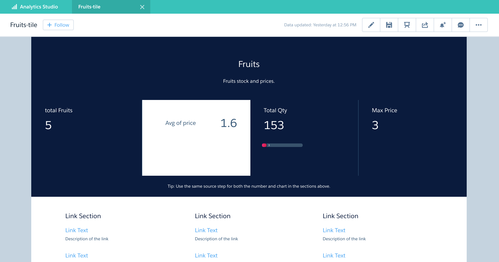

{{appName}}
What Can You Do with Analytics?

- Make sense of large amounts of data ( loading into datasets )
- Explore your data to discover new, unexpected insights (slice and dice)
- Get instant visualizations that show how your business is doing
- Create dashboards to continually monitor key business metrics based on the latest data
- Save your insights, share them with others, and start discussions about them in Chatter
Einstein Analytics Features
data ➜ insights ➜ actions
- Native to Salesforce with Mobile support
- Create/Edit objects within
- Embed Einstein Analytics in Sales Cloud objects/records
- Sharing: Share and collaborate on :
- Insights
- Actions
Einstein Analytics Features - contd.
- Get new Insights to every member of your team from your business data using:
- Analytics
- Business Data from:
- Salesforce
- ERP
- Data warehouses
- Log files
- Provides self-service business intelligence to your teams
Analytics Assets

Dataset - specially formatted source data, optimized for interactive exploration

Lens - particular view into a dataset’s data. It’s where you do exploratory analysis and visualization.

Dashboards - curated set of charts, metrics, and tables based on the data in one or more lenses.

Apps - Contains dashboards, lenses, and datasets in any combination that makes sense for sharing your data analyses with colleagues.
Apps are like folders. They allow users to organize their data projects : private and shared - control sharing.
Apps are like folders. They allow users to organize their data projects : private and shared - control sharing.
More terms
- Explorer: the interface where you explore datasets and lenses
- Dataflow: a set of instructions that specifies:
- what data to extract from Salesforce objects or external datasets
- how to transform the datasets
- which datasets to make available for querying
- dataflow job processes the logic in a dataflow
Dataset Builder
- dataset builder: a point-and-click user interface
that allows you to easily select and extract data from related Salesforce objects to create a single dataset.

Dimension
-
Qualitative value, like region, product name, and model number.
Dimensions are handy for grouping and filtering your data.
Unlike measures, you can’t perform math on dimensions.
Like measures, dimensions also have names (region) and values (northeast).
Time is usually considered a dimension rather than a measure.
Grouping can be applied on Dimensions.
Measure
-
Quantitative value, like revenue and exchange rate.
You can do math on measures, such as calculating the total revenue and minimum exchange rate.
A measure is typically aggregated in some way, which means that it’s displayed with some math already applied to it. For example, when you first view a dataset, you often see a simple aggregation such as the count of the number of rows
Exploration - Lens
- Two main parts of the lens: the query and the visualization
- Query:
- Aggregating: Summarize the data by some measure.
For example, the measure could be a count of the rows of data, as in the initial exploration state.
Another common measure is a sumof the amounts. - Grouping: Group the data by a certain dimension. For example, group by product name or account.
- Filtering: Filter the data to narrow your results. For example, show only opportunities within the fiscal year.
Both Dimensions and Measures can be involved in Filtering
- Aggregating: Summarize the data by some measure.
For example, the measure could be a count of the rows of data, as in the initial exploration state.
- Groups and filters are optional, whereas aggregation is required
- Regardless of the query you use, there must be at least one measure to have a visualization
Parts of Lens
- Dataset
- Horizontal Axis - Measures and Dimensions:
Parts of Lens - contd.
- Horizontal Axis - Measures and Dimensions:
Parts of Lens - contd..
- Vertical Axis - Dimensions:
Parts of Lens - contd...
- Filter By - Dimensions and Measures:
Parts of Lens - demo
Visualization
- Commonly a chart or graph, such as a bar chart, donut chart, timeline, or heat map. It can also be data in tabular form, such as a comparison table or pivot table. Every visualization has an underlying query, which is how Analytics retrieves information from the source data
Sample Data Visualizations
Selecting Right chart
Chart Selection App
Dataset
- Set of Data Sources
- Can Contain data from single Salesforce object or data from external data sources like Oracle, Postgres, MySQL...
- You can create dataset by combining data from datasets.
Dataset Creation - Demo
Dataset Recipe
- A dataset recipe is a user-interface tool that lets you take data from your existing datasets and replications, prepare it, and output the results to a new dataset.

Dataset Recipe - contd.
-
Use a recipe to
- combine data from multiple datasets or replications
- bucket the data
- add formula fields
- cleanse the data by transforming field values
- remove fields and filter rows that you don’t need, before you create the target dataset.
- A dataset recipe is simply a saved set of transformations, or steps, that you want to perform on a specific source dataset or replication.
When you run a recipe, it applies the transformations and outputs the results to a new target dataset.
You can schedule a recipe to run on a recurring basis to keep your target dataset up to date.
This new dataset can then be used as a standalone dataset for exploration or dashboard creation, or used in your dataflows or other recipes.
Working with Recipe - Demo

edgemart Transformation
- Gives dataflow access to an existing, registered dataset, which can contain Salesforce data, external data, or a combination of the two.
- Example: Compare the final-sales-amount against the opportunity-amount to determine if heavy discounts were offered to close deals
Date
- Can be represented as a day, month, year, and, optionally, time. You can group, filter, and perform math on dates.
Date filtering - Demo
Date Examples
-- Relative Date Ranges
a = filter a by date('year', 'month', 'day') in ["1 year ago".."current year"];
a = filter a by date('year', 'month', 'day') in ["2 quarters ago".."2 quarters ahead"];
a = filter a by date('year', 'month', 'day') in ["4 months ago".."1 year ahead"];
a = filter a by date('year', 'month', 'day') in ["2 fiscal_years ago".."current day"];
Date functions Doc
Date filter Example - 1
Date filter Example - 2
Date generate Example
q = load "DTC_Opportunity_SAMPLE";
q = foreach q generate 'Close_Date','Close_Date_Year','Close_Date_Month', 'Close_Date_Day',
(date_diff("day",
toDate('Close_Date', "yyyy-MM-dd"), now()
)
) as days_from_now,
(date_diff("month",
toDate('Close_Date', "yyyy-MM-dd"), now()
)
) as months_from_now;
q = limit q 2000;
Date generate Example - Contd.
generate using Case - simple case expression syntax - Example
q = load "DTC_Opportunity_SAMPLE";
q = foreach q generate 'Opportunity_Source',
(case 'Opportunity_Source'
when "Marketing" then "MKT"
else "Other"
end)
as Category;
generate using Case - simple case expression syntax - Example
generate using Case - searched case expression syntax - Example - contd.
q = load "DTC_Opportunity_SAMPLE";
q = foreach q generate 'Opportunity_Source',
(case
when 'Opportunity_Source' == "Marketing" then "MKTG"
else "Other"
end)
as Category;
generate using Case - searched case expression syntax - Example - contd.
More Case Examples - 1
-- searched case expression syntax
q = load "DTC_Opportunity_SAMPLE";
q = foreach q generate 'Opportunity_Type',
(case
when 'Opportunity_Type' == "New Business" then "NEW_BIZ"
when 'Opportunity_Type'=="Existing Business" then "EXT_BIZ"
else "Other"
end)
as 'Biz Cat';
More Case Examples - 2
-- simple case expression syntax
q = load "DTC_Opportunity_SAMPLE";
q = foreach q generate 'Opportunity_Type',
(case 'Opportunity_Type'
when "New Business" then "NEW_BIZS"
when "Existing Business" then "EXT_BIZS"
else "Other"
end)
as 'Biz Cat';
More Case Examples - 2 - contd.
Date functions and Case Example
q = load "DTC_Opportunity_SAMPLE";
q = foreach q generate 'Close_Date','Close_Date_Year','Close_Date_Month', 'Close_Date_Day',
toDate('Close_Date', "yyyy-MM-dd") as cdt,
now() as now,
date_diff("day", toDate('Close_Date', "yyyy-MM-dd"), now()) as days,
(
case
when date_diff("day", toDate('Close_Date', "yyyy-MM-dd"), now() ) <= 30 then "30 Days"
when date_diff("day", toDate('Close_Date', "yyyy-MM-dd"), now() ) > 30
and
date_diff("day", toDate('Close_Date', "yyyy-MM-dd"), now() ) <= 60 then "60 Days"
else "60+ Days"
end
) as days_bucket;
q = filter q by date_diff("day", toDate('Close_Date', "yyyy-MM-dd"), now()) <= 600;
q = limit q 2000;
Date functions and Case Example - contd.
Group By - Order By
q = load "DTC_Opportunity_SAMPLE";
-- interested in Agriculture and Education only
q = filter q by 'Industry' in ["Agriculture", "Education"];
q = group q by ('Industry', 'Billing_State_Province');
-- projection
q = foreach q generate 'Industry' as 'Industry', 'Billing_State_Province' as 'Billing_State_Province', sum('Amount') as 'sum_Amount';
-- order the projection
q = order q by ('Industry' asc, 'Billing_State_Province' asc);
q = limit q 2000;
Filter - Group By - Order By - contd.
Filter - Group By - Order By - contd..
Filter - Group By - Order By - contd...
Replication
- Use to extract data from its source and load it into intermediate unregistered datasets
- These replicated datasets are available for use in dataflows and dataset recipes.
- Decouples the extract of Salesforce data from your dataflows, letting you run it on a separate schedule
- Extracts Salesforce data incrementally by default, meaning that only data that’s changed gets extracted
- You can enable up to 50 objects for replication
- Replication only performs one extract per object
- Benefits
- optimizes your dataflows by extracting your Salesforce data in a separate job ahead of time
- comes with a host of connectors that let you connect to external data and replicate it, ready for use in your dataflows and recipes.
Working with Replication - Demo
Dashboard
- Collection of widgets (performance indicators, charts, tables, filters, and images) that work together to tell a data story from multiple angles
- When you share Analytics data via a dashboard, you’re setting up your audience members to do some exploring of their own, without turning them loose on the whole dataset.
- A dataset can contain vast amounts of data. Some of that data is relevant to specific questions that your audience has; some of that data is irrelevant noise. Data that’s critical to one set of questions is sometimes noise in relation to another set of questions.
- Dashboard is for carrying on a conversation based on one or more datasets that matter to your company
Key Elements of Dashboard

Hacking a Dashboard

Hacking a Dashboard
Binding Toggle - Steps
Binding Toggle
How to add SOQL step in Dashboard
- Not recommended for larger volumes of data, use it for simple lookups of small data. Docs

How to add SOQL step into existing Dashboard
How to add SOQL step into existing Dashboard - code
"soql": {
"type": "soql",
"query": "SELECT Name, Amount from Opportunity",
"strings": ["Name"],
"numbers": ["Amount"],
"groups": ["Name"],
"selectMode": "single"
}
How to add SOQL step into existing Dashboard - contd.
How to add SOQL step into existing Dashboard - code
"soql2": {
"type": "soql",
"query": "SELECT Name, CloseDate, StageName, Owner.Name, Amount, Account.Name FROM Opportunity ",
"strings": ["Name", "CloseDate", "StageName", "Owner.Name", "Account.Name"],
"numbers": ["Amount"],
"groups": [],
"selectMode": "single"
}
Take Action on Multiple Table Records with a Single Click


Dynamically Set Initial Selections Based on the Dashboard Viewer
Reference
- Example: When the dashboard opens, you want it to dynamically filter charts based on the name of the currently logged in user.
- You can set initial selections based on the following Salesforce user tokens: user.id, user.name, user.rolename, and user.roleid.
- Analytics retrieves the values of these tokens from Salesforce environment variables—these values don’t come from datasets.
App Sharing in EA
Analytics Permission Set Licenses and User Permissions
Learn About Analytics Permission Set Licenses and User Permissions
Setup - References
Dashboard JSON Developer Guide
Videos about Dashboard
Comparision Dashboard

Details Dashboard

Summary Dashboard

Tile Dashboard
Selection-Based Filters
-
A selection-based filter lets you apply whatever filters you wish while viewing the dashboard.
For example, set the minimum and maximum values in a range widget to make the dashboard show the amounts that fall within that range.
These types of filters are often tied to each other so that you can progressively drill deeper. For example, use one filter to look at sales of a product. Then use the next to filter sales by region. Finally, use another to filter sales by account. The dashboard shows the results based on all three filters. There are different types of selection-based filter widgets: date, list, range, and toggle.
Key Performance Indicators (KPI)
-
Some information is best measured by a single number, also known a key performance indicator (KPI).
Some number elements can be filtered based on selections in charts and filters.
For example, in a bar chart that shows individual salespeople’s pipelines, click a bar to focus on a particular person’s pipeline. Notice that the number changes from showing the total value for all salespeople to show the value for the selected person.
Charts
- A rich variety of charts shows you data from multiple angles.
Many parts of a chart are interactive.
For example, click a bar in a bar chart and watch what happens. Clicking a bar filters the query that the bar chart represents. Your revision changes other values in this chart, values in other charts, and number displays.
Tables
-
A table provides the record-level details.
For example, a chart can show you a performance summary for each region, but the table can show you the opportunity-specific details. You can sort tables to show the top and bottom records. You can also create calculated columns (derived columns) in tables to compute values based on existing data.
Ask your data question - using explorer

Ask your data question - using explorer - query
- Use the left panel [1] of the explorer to create your query.
- You can perform calculations (referred to as measures), like sum of amount or average case duration
- To break down the measure across different areas, group it by descriptive fields (known as dimensions), like region or owner.
- To find the top or bottom performers, sort the measure in descending or ascending order.
- Apply filters to focus on a subset of the results.
Visual representation of the query results
- The middle explorer panel [2] shows a visual representation of the query results.
You can display the results as a chart or table.
When in chart mode, you can choose which chart type to use.
When in table mode you can display the dataset records as a values table or create calculated fields and display them in a compare table.
Visualization properties
- The right explorer panel [3] shows the visualization properties—configure them to modify the appearance of the chart or table.
For instance, you can remove the legend, change the axis scale, or add a title.
Lens
- When you want to look at data in an exploratory mode, you do so in a lens.
- A lens has several aspects: it’s how you view data in a dataset, it’s the place where you explore the data graphically, and it’s the basis for building any dashboard

Using SAQL for advanced query

Computed Columns

Null Handling
- EA can use data from Salesforce or from an external data source.
To prevent data quality issues, EA will disregard any fields in Salesforce (or columns in external data) that are entirely null. - For Salesforce data: Use the defaultValue override in the dataflow definition.
{ "Extract_Opportunities": { "action": "sfdcDigest", "parameters": { "object": "Opportunity", "fields": [ { "name": "Id" }, { "name": "Name" }, { "name": "Amount", "defaultValue":0, "precision":18, "scale":2 }, ... - For external data columns: Use the defaultValue override in the metadata schema.
Null Handling - contd.
- Null measure handling is important because it affects the results of certain calculations. Without null measure handling (when no default value is specified), Analytics replaces blanks in your data with zeros
- Replacing blank values with zeros can be problematic for a number of reasons - calculating average, minimum will have issues


"defaultValue": "null" // computeExpression // The defaultValue attribute for a computed field accepts a value of null. // specify these defaults using special null valueReference
Dashboard JSON
- Easy way: using designer
- JSON defines the components of the dashboard and how they interact
- TJSON consists of properties that define layouts, pages, widgets, and steps.
- Customization: Editing Dashboard JSON files
- Manually set up bindings to override the default faceting behavior & specify the relationships between the steps that aren’t bound by default.
- Set Query Limits
- Specify columns for a values table
- Specify a SAQL query
- Populate a filter selector with a specified list of static values instead of from a query
- Set up layouts for mobile devices for a dashboard
Dashboard JSON - contd.
Dashboard JSON - contd..
Dashboard JSON high level properties
- label - name of the dashboard
- mobileDisabled - can be accessed in the mobile app
- description
- state
- datasets - specifies all datasets used by steps in the dashboard.
"label": "Fruits Summary",
"mobileDisabled": false,
"state": {
"dataSourceLinks": [],
...
"steps": {
}
}
datasets": [
{
"id": "0Fb1N000000LZYbSAO",
"label": "fruitStock",
"name": "fruitStock",
"url": "/services/data/v42.0/wave/datasets/0Fb1N000000LZYbSAO"
},
{
"id": "0Fb1N000000LZYgSAO",
"label": "fruitPrice",
"name": "fruitPrice",
"url": "/services/data/v42.0/wave/datasets/0Fb1N000000LZYgSAO"
},
{
"id": "0Fb1N000000LZYlSAO",
"label": "fruitPriceStock",
"name": "fruitPriceStock",
"url": "/services/data/v42.0/wave/datasets/0Fb1N000000LZYlSAO"
}
]
datasourceLinks properties
- fields - Array of datasources in the connection
- label - Label for data source connection
- name - API name for the data source connection
gridLayouts
- The gridLayouts section defines all layouts built for the dashboard.
- name - name of the layout
- maxWidth - max width in pixels that dashboard can use
- numColumns - number of columns in the designer grid for this layout
- pages - name and id of the page
- rowHeight - height of each row
- selectors - device
- style
Dashboard - Binding Toggle Steps
// syntax: column(source, [columnNames...])
// example: column(myStep.selection, ["stateName"])
column( staticStep.selection, [\"value\"] ).asObject()

Dashboard - Binding Toggle Steps - contd.
column( staticIndustry_1.selection, [\"value\"] ).asObject()
column(StaticDTC_1.selection,[\"measure\"]).asObject()}}

Dynamic Reference Line
Dashboard - Binding on KPIs - Use Case
- Dataset fm has records for US Farmers market with a Dimension: "State"
- To show the Binding example in query, we make following KPS:
- Total Farmers Markets in USA - record-count (A), which is KPI: Totals
- Total Farmers Markets in CA - record-count (B), which is KPI: CA
- Total Farmers Markets in States other than CA - record-count ( C = A - B), which is KPI: Others and Others2
- This can be done easily with the SAQL for C as:
q = load fm; q = group q by all; q = filter q by 'State' != \"California\"; q = foreach q generate count() as 'count'; -- this let us call as Others2 - This can be also be done with the SAQL for C as:
Next slide shows the Demo of this
Dashboard - Binding on KPIs - Demo
Embed Analytics Dashboards in Lightning Pages
Doc: Embed Analytics Dashboards in Lightning Pages
Embed Analytics Dashboards in Classic Pages

Doc: Embed Analytics Dashboards in Classic Pages
Analytics Settings
Change Display Labels for Dataset Fields and Values
Change Display Labels for Dataset Fields and Values - contd.
FROM:
{
"dataset": {},
"dates": [],
"derivedDimensions": [],
"derivedMeasures": [],
"dimensions": [
],
"measures": [],
"organizations": [],
"showDetailsDefaultFields": []
}
Change Display Labels for Dataset Fields and Values
TO:
{
"dataset": {},
"dates": [],
"derivedDimensions": [],
"derivedMeasures": [],
"dimensions": [{
"field": "Stage",
"label": "Stage Name",
"members": [{
"label": "LOST",
"member": "Closed Lost"
},
{
"label": "WON",
"member": "Closed Won"
}
],
"showInExplorer": true
}
],
"measures": [],
"organizations": [],
"showDetailsDefaultFields": []
}
Compare Reports & Dashboards with EA
Reports & Dashboards References
Compare Reports & Dashboards with EA - Contd.
Object Limit in Report Types
Limits on Report TypesMigrate Analytics Assets with Change Sets

- Use change sets to move customized Analytics assets between orgs that have a deployment connection
- For example, create an Analytics app containing dashboards, lenses, datasets, dataflows in your Sandbox org,
then migrate the app assets to your production org once testing is complete Migrate Analytics Assets with Change Sets - Note that you must add dependent dataflows manually. That is, if you add a dataset to a change set, the associated dataflows are not automatically picked up.
- Click View/Add Dependencies to ensure all dependent assets and appropriate permission sets and profile settings are added
Analytics Migration, Packaging, and Distribution
- Migrate Analytics assets using change sets, bundle them together in managed packages, distribute and track packages through AppExchange and the License Management App, and use the metadata API to manage customizations for your org.
- Refer